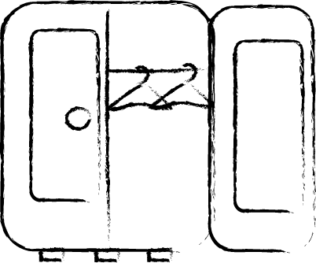

Hello! Welcome to my blog!
Imagine, you want something trendy and aesthetic, but you don't want to buy new, you're not sure if you'll wear it for a long time... And renting from special stores usually costs money and therefore doesn't make sense. So my blog is dedicated to all the exchange shops I found in Amsterdam.
